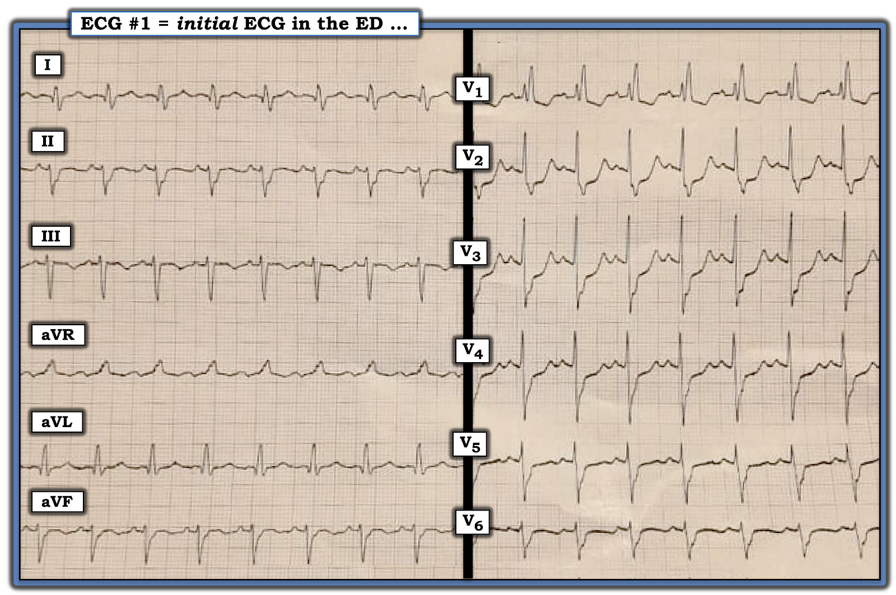
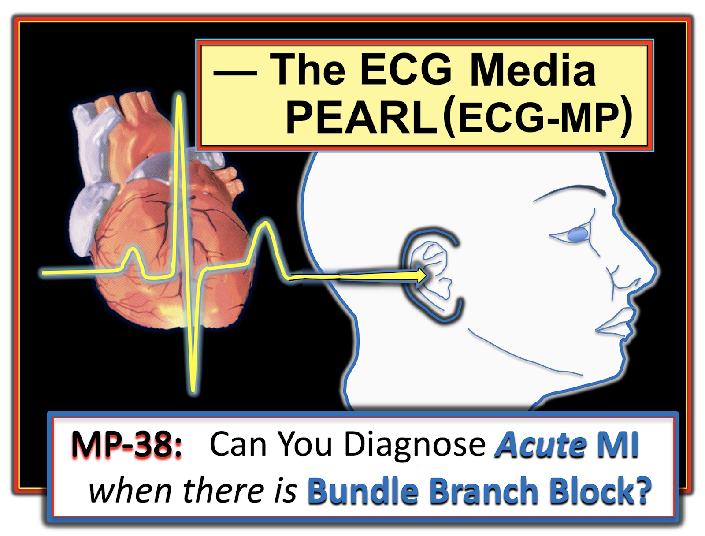

ECG Blog #298 — RBBB và còn gì khác nữa?
Bệnh nhân là một phụ nữ lớn tuổi đến ED (Emergency Department — khoa cấp cứu) vì đau ngực — kèm điện tâm đồ trong Hình-1.
- Có RBBB (blốc nhánh phải — Right Bundle Branch Block). Còn gì khác nữa không?


NHẬN ĐỊNH Ban đầu của tôi ( = bản “Nhanh Gọn”):
Nhằm cho thấy chúng ta có thể đi đến một chẩn đoán giả định nhanh đến mức nào — Đây là đánh giá theo “Bản Nhanh Gọn” của tôi về bản ghi hôm nay:
- Nhịp là nhịp nhanh xoang với tần số ~115/phút (tức là, nhịp đều với sóng P xoang dương ở chuyển đạo II).
- Khoảng PR bình thường — nhưng QRS rõ ràng kéo dài (tức là, thời gian rõ ràng dài hơn một nửa ô lớn = ≥0.11 giây). TỐT NHẤT là “Dừng lại!” cách tiếp cận hệ thống ngay khi nhận ra QRS giãn rộng — để xác định TẠI SAO QRS rộng trước khi đi tiếp.
- Phức bộ QRS ba pha RsR’ điển hình ở chuyển đạo V1 (chuyển đạo phía phải), cùng sóng S tận rộng ở các chuyển đạo bên I và V6, là đủ để chẩn đoán RBBB (Right Bundle Branch Block).
- QRS âm ưu thế ở mỗi chuyển đạo dưới là đủ để chẩn đoán LAHB (blốc phân nhánh trái trước — Left Anterior HemiBlock).
TIẾP THEO: Giờ đã xác định được TẠI SAO QRS rộng ở Hình-1 (tức là, do RBBB/LAHB) — tôi tiếp tục đánh giá “Nhanh” của mình:
- Thấy sóng Q bất thường ở chuyển đạo I và aVL (tức là, các sóng Q này rõ ràng rộng-hơn-mức-đáng-có — xét theo biên độ sóng R khiêm tốn ở các chuyển đạo này).
- Mặc dù hình dạng của sóng ST-T ở chuyển đạo V1 là điển hình cho RBBB — nó chắc chắn không điển hình ở các chuyển đạo V2, V3 và V4. Thay vào đó — có ST chênh xuống rõ rệt tại điểm J ở chuyển đạo V2, V3, V4 (tối đa ở chuyển đạo V2) — tiếp theo là đoạn ST thẳng đuỗn bất thường rõ rệt, đi lên chậm (thay vì ban đầu đi xuống, như sóng ST-T ở chuyển đạo V1). Hình dạng đoạn ST này là đặc trưng của OMI thành sau cấp (nhồi máu cơ tim do tắc — Occlusion-based MI).
- Xem các chuyển đạo Khác: Tôi không thấy ST chênh lên ở chuyển đạo nào. Thay vào đó — tôi thấy sóng ST-T dẹt không đặc hiệu ở hầu hết các chuyển đạo còn lại.
- NHẬN ĐỊNH về ĐIỆN TÂM ĐỒ #1: Nhịp nhanh xoang ~115/phút. Blốc hai phân nhánh (tức là, RBBB/LAHB). Sóng Q bên cao bất thường (ở chuyển đạo I, aVL). OMI thành sau cấp cho đến khi chứng minh được điều ngược lại. Động mạch “thủ phạm” trong nhồi máu cơ tim thành sau đơn độc cấp (hoặc nhồi máu cơ tim sau-bên cấp) — thường gặp nhất sẽ là động mạch vành LCx (động mạch mũ trái — Left Circumflex).
========================
CÁC ĐIỂM HỌC TẬP:
- ĐIỂM #1: Làm sao chúng ta biết rằng ST chênh xuống ở các chuyển đạo trước trong điện tâm đồ #1 thể hiện nhồi máu cơ tim thành sau cấp — chứ không đơn thuần do RBBB?
TRẢ LỜI: hình dạng ST chênh xuống thường thấy ở các chuyển đạo trước khi có RBBB là dốc xuống từ từ. Nó không thẳng đuỗn như ở chuyển đạo V2,V3,V4 của Hình-1.
- Còn đặc hiệu hơn nữa cho chẩn đoán nhồi máu cơ tim thành sau — ST chênh xuống do RBBB đơn thuần sẽ giảm dần khi đi từ chuyển đạo V1-sang-V2-sang-V3 — rồi cuối cùng biến mất khi chuyển sang các chuyển đạo trước tim phía bên hơn. Độ sâu của đoạn ST chênh xuống tại điểm J không được tăng lên khi đi xa dần khỏi chuyển đạo V1 — như đã xảy ra ở điện tâm đồ #1 giữa chuyển đạo V1 và chuyển đạo V2.
- Điểm MẤU CHỐT: OMI thành sau cấp được đặc trưng bởi ST chênh xuống tối đa ở chuyển đạo V2, V3 và/hoặc V4 — đúng như thấy ở điện tâm đồ #1.
========================
- ĐIỂM #2: Làm sao chúng ta biết rằng các sóng Q thấy ở chuyển đạo I và aVL của điện tâm đồ #1 là “bệnh lý” — chứ không đơn thuần là sóng q vách bình thường?
TRẢ LỜI: Thường gặp các “sóng q vách bình thường” nhỏ và hẹp ở một hoặc nhiều chuyển đạo bên (tức là, ở chuyển đạo I, aVL, V4,V5,V6). RBBB hoàn toàn không làm mất các sóng q vách bình thường này.
- Bình thường, hoạt hóa vách đi từ phía trái-sang-phải của vách liên thất. Vì khiếm khuyết dẫn truyền trong RBBB nằm ở phía phải (không phải phía trái) của vách — vectơ hoạt hóa vách ban đầu từ trái sang phải (là lúc các sóng q vách được ghi lại) vẫn còn nguyên khi có RBBB.
- Khó xác định sóng q ở chuyển đạo bên lớn đến mức nào thì là “quá lớn” để còn là sinh lý. Dù vậy — xét tình huống cấp tính của ca hôm nay (tức là, đau ngực mới xuất hiện ở bệnh nhân có OMI thành sau cấp đang diễn tiến) — tôi đã diễn giải các sóng Q ở cả hai chuyển đạo bên cao (I, aVL) là cao và rộng không tương xứng so với biên độ sóng R rất khiêm tốn ở các chuyển đạo này.
- LƯU Ý: Thành bên cao thường bị ảnh hưởng cùng với các tổn thương LCx gây OMI thành sau cấp.
========================
- ĐIỂM #3: Làm sao chẩn đoán blốc phân nhánh khi có BBB (blốc nhánh — Bundle Branch Block)?
TRẢ LỜI: Chẩn đoán LAHB hoặc LPHB đều không có ý nghĩa khi có LBBB. Ngược lại — khi có RBBB, có thể đồng thời có LAHB hoặc LPHB (khi đó sẽ là blốc hai phân nhánh).
- Theo định nghĩa, khi có LBBB — không có dẫn truyền qua hệ thống nhánh trái. Do đó — dẫn truyền bị suy giảm qua cả phân nhánh trái trước lẫn phân nhánh trái sau. Vì vậy nói “LBBB kèm LAHB” là thừa (vì "LBBB" vốn đã bao hàm cả LAHB và LPHB).
Như đã bàn trong các Video điện tâm đồ ở Phần bổ sung bên dưới — lối tắt để chẩn đoán các blốc hai phân nhánh — là nhận ra rằng chỉ có 3 tình huống khả dĩ:
- i) RBBB + LAHB (tức là, ngoài RBBB — QRS sẽ âm ưu thế ở mỗi chuyển đạo dưới). Đây chính xác là tình huống trong bản ghi hôm nay!
- ii) RBBB + LPHB (tức là, ngoài RBBB — QRS ở chuyển đạo I sẽ có sóng S đi xuống rất dốc và rất sâu).
- iii) RBBB không kèm blốc phân nhánh nào (tức là, nếu cả chuyển đạo I lẫn các chuyển đạo dưới đều không có QRS âm ưu thế).
========================
KẾT LUẬN Ca bệnh:
Tiếc là — tôi không có chi tiết về xử trí cụ thể của ca này, ngoài việc biết rằng troponin dương tính đã xác nhận nhồi máu cấp.
- Do bệnh nhân hôm nay lớn tuổi (và không có bản ghi trước đó để so sánh) — không rõ các sóng Q bên cao và RBBB/LAHB có phải là "mới" hay không (kiểu phối hợp blốc hai phân nhánh này thường gặp trong tắc LAD cấp hơn là tắc LCx).
- Dù thế nào — "Điều cần nhớ" là ở bệnh nhân có triệu chứng mới, điện tâm đồ hôm nay hoàn toàn đủ để chẩn đoán OMI thành sau cấp.
=======================
Lời cảm ơn: Xin cảm ơn M Shah (từ Srinagar, Ấn Độ) đã chia sẻ ca bệnh và bản ghi này.
=======================
==================================
Các bài ECG Blog Liên quan đến ca hôm nay:
- ECG Blog #205 — Ôn lại Cách tiếp cận hệ thống của tôi trong đọc điện tâm đồ 12 chuyển đạo.
- ECG Blog #193 — minh họa cách dùng Nghiệm pháp Soi gương (Mirror Test) để dễ nhận ra nhồi máu cơ tim thành sau cấp. Bài này ôn lại những điều cơ bản để dự đoán động mạch "thủ phạm". (LƯU Ý: Hình-2 trong Phần bổ sung bên dưới minh họa những điểm thiết yếu để nhận diện nhồi máu cơ tim thành sau đơn độc).
- ECG Blog #246 — thêm một ví dụ về nhồi máu cơ tim thành sau cấp (với nghiệm pháp Soi gương dương tính).
- ECG Blog #80 — ôn lại cách dự đoán động mạch "thủ phạm" (và đưa thêm một ca minh họa Nghiệm pháp Soi gương để chẩn đoán nhồi máu cơ tim thành sau cấp).
- ECG Blog #285 — Ôn lại một ca nhồi máu cơ tim thành sau cấp khác.
- ECG Blog #258 — Cách "Định tuổi" một Nhồi máu dựa trên điện tâm đồ ban đầu.
- ECG Blog #204 — Ôn lại chẩn đoán điện tâm đồ Các Blốc Nhánh (RBBB/LBBB/IVCD).
- ECG Blog #203 — Ôn lại chẩn đoán trục trên điện tâm đồ và các Blốc phân nhánh. Để ôn lại hình dạng QRS trong các Blốc Hai phân nhánh (RBBB/LAHB; RBBB/LPHB).
- ECG Blog #221 — Ôn lại một ca RBBB trong bối cảnh CÁCH chẩn đoán nhồi máu cơ tim cấp khi có BBB.
==================================
PHẦN BỔ SUNG (12/4/2022):
Tôi đã bổ sung bên dưới một số tài liệu đa phương tiện chọn lọc, ôn lại các khái niệm CHÍNH liên quan đến ca hôm nay.

=======================================
LƯU Ý: Dành cho ai muốn một video ôn tập dễ tiếp cận minh họa cách chẩn đoán Các Blốc Nhánh trong chưa đến 5 giây:

ECG Media Pearl #22 (13:15 phút Video) — ECG Blog #204 — Ôn lại một cách tiếp cận dễ áp dụng để chẩn đoán Các Blốc Nhánh (RBBB/LBBB/IVCD) chỉ trong vài giây! — xem thêm ECG Blog #282 —
- BẤM VÀO ĐÂY — để tải MIỄN PHÍ bản PDF của tệp 26 trang này về BBB (từ ECG-2014-ePub của tôi) — ôn lại những điều Cơ bản trong chẩn đoán điện tâm đồ Các Blốc Nhánh (bao gồm chẩn đoán nhồi máu cơ tim cấp & LVH khi có BBB).
==================================

ECG Media Pearl #21 (12:00 phút Video) — ECG Blog #203 — Cách tiếp cận dễ áp dụng về Blốc phân nhánh (LAHB/LPHB) và Blốc Hai phân nhánh (RBBB/LAHB- RBBB/LPHB).


ECG Media PEARL #38 (11:30 phút Audio) của hôm nay — Ôn lại Chẩn đoán điện tâm đồ nhồi máu cơ tim cấp khi có BBB.